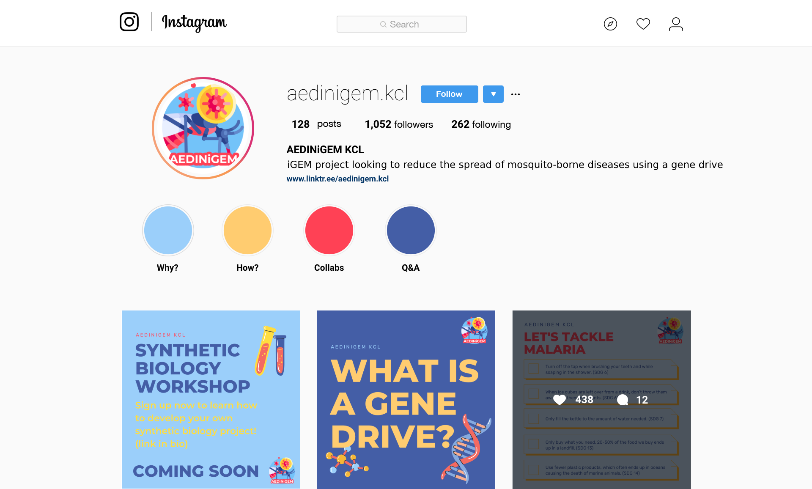

Outreach Proposals
We plan to use social media to reach a wider audience and create a platform to educate others on synthetic biology and our project to also help raise awareness to the issues we face due to mosquito-borne diseases through different infographics on topics relating to the project. For example, we could tackle how to reduce the risk for mosquito-borne diseases through human behavioral change (i.e. wearing protective clothing, reducing aquatic sites for breeding, using repellent...) We could also hold events like workshops or panels to help empower and motivate other individuals to take action and build the skills needed to solve these issues. These events could invite external speakers with people in industry to provide access to quality information and lower the barriers to entry in the synthetic biology field. Another idea is to do story takeovers where we can hold Q&As or a day in the life to provide better insight into the field. These efforts are also in line with the inclusivity aspect of the project. The example provided below shows an example of the type of content we can create
Project Partners
We have also contacted a diverse set of outside people and organisations to help with project promotion and implementation: